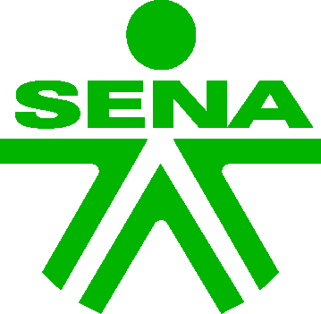

Recorriste la célula vegetal bajo el microscopio. Ahora explorála en capas digitales: primero en Realidad Aumentada, luego en 3D interactivo.
Creación rápida de contenidos educativos.
Presentaciones dinámicas asistidas por IA.
Conexión entre objetos físicos y contenido digital.
Exploración interactiva de estructuras complejas.
Observación directa de fenómenos reales.
Kahoot y Mentimeter.
SENA
Centro Tecnológico del Mobiliario
Tecnoacademia 2026